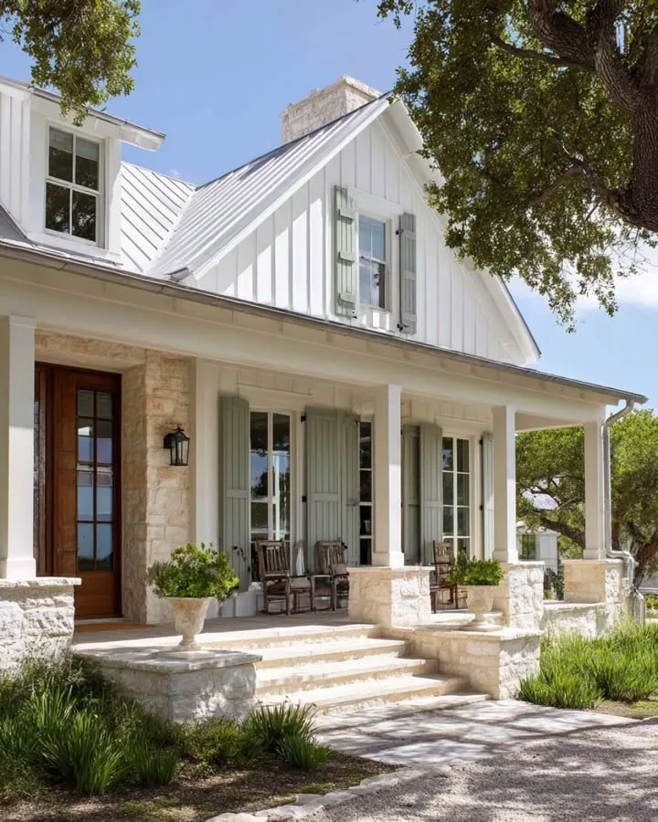
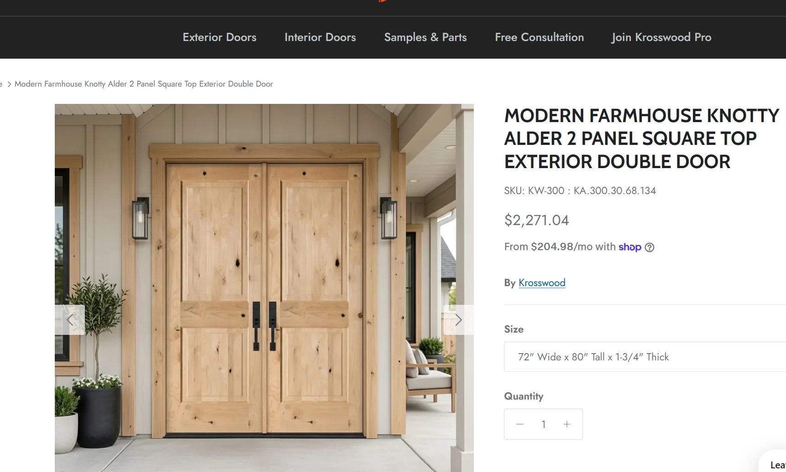

Front Entry
Keep the interior entry wall clear: no built-in console cabinet or wall picture above it.
Powder-room entry and stair guard
October 31 powder/coat reference: restore the continuous north wall at z=35.1, x=0-12.2 ft behind the shallow coat closet, replacing the ground rail. Retain the upper-flight bars/posts and 36-inch oak handrail above the nine-foot wall head, joining the upstairs guard at y=13 ft. Treads, landings, beams, basement protection and saved JSON remain unchanged. Wall-head enclosure, support, anchorage and handrail continuity require professional review.
Powder stays x=0-7.1, z=35.1-41 ft, with toilet and vanity on the north wall facing south. Its 30 × 96-inch east doorway moves to z=38-40.5, south-jamb hinge, inward 90-degree default and 0/90 modeled operation. Coat closet is x=7.1-12.2, z=35.1-37.5; closed 48 × 96-inch French doors sit within the opening and face south into the alcove z=37.5-41, which remains open east to the hall. The closet inspection view uses orthographic projection. Approach is 37.8 inches between paint, 36.3 inches between baseboards away from door/casing projections; actual occupied operation and offset hinge hardware are unverified.
Door pivots offset 3.755 inches toward the swing side to clear the modeled casing and leaf thickness with a 1/8-inch reserve. Full-size leaves clear walls/casing through sampled 0/90 sweeps. Keep powder drawers closed during door movement; actual jambs, stops, hinges and occupied coat retrieval remain unverified.
The double front entry is nominally 60 × 96 inches at the updated front-wall datum z=54.679 ft, 5.75 inches forward of its prior location; the porch remains 7 ft deep. It has two closed oak/glass leaves and no sidelights or transom. Click/tap a modeled leaf to toggle it to the 180-degree conceptual swing and back; both start closed. The powder door also has a 96-inch head, matching the house-wide eight-foot door requirement. Preserve the front door's existing width, handing, lock selection and display pose. Actual stops and egress clearance are unverified.
The powder room remains 7.1 × 5.9 ft with its separate 5.1 × 2 ft 5 in guest coat closet and open entry alcove. The door is nominally 30 × 96 inches; the closet has a nominal 48 × 96-inch French pair. Keep the powder room and coat closet as separate spaces, and guests do not pass through the bathroom to reach coats. See the powder-room view and bathroom details.
Exterior steps and stone contrast
Current entry and porch — November 15 follow-up: retain the nominal 60 × 96-inch opening, outer hinges, closed defaults and conceptual 110-degree inward operation. Actual matte oak leaves, upper/lower panels, casing and warm cream cast-stone surround now have straight rectangular heads; the curved leaves, arch closure and arch molding are removed, not concealed. Four straight 12-inch square cream columns, simple bases/caps, 9.7-ft beam underside and every roof plane/pitch remain. The unchanged 31 ft 2.4 in × 7 ft porch has a separate horizontal warm-wood ceiling at y9.6 ft with 0.75-inch lining, not a sloping roof underside called flat. Two shallow 2700 K downlights sit wholly below it; the outer eave underside and fascia remain separate. Dark Bronze lanterns, two mirrored seating groups and planters stay in their existing locations, outside the entry route. Full ivory brick covers porch foundation faces; cast stone remains limited to entrance framing, steps and landing nose. This supersedes the earlier arched-entry/sloping-ceiling and one-group seating studies below. Selected door fitting, occupied swing, fixture/recess depth, beam support, ventilation, flashing/drainage and paving performance remain unapproved.
The existing front beds now have five spaced evergreen mounds and seven low sage-green mounds each, with restrained 2-inch stone edges contained in the soil below the walk. The 9.8 ft gap between beds, entry steps, portal passage and driveway are unchanged. Plant species, mature spread, soil, drainage, frost-resistant edging and maintenance access require landscape review.
Historical entry close-up — October 30 (roof accent superseded November 15): retain the curved oak double leaves, deep white surround, oak panels, dark pulls and Wyze placeholder in both models. Nominal opening is 60 inches wide, crown96 inches, spring85.2 inches; the whole opening is not 96 inches clear. Leaves start closed; the 110-degree endpoint is conceptual. The charcoal standing-seam canopy now has a true segmental barrel entry accent, not a pediment: 9.15 ft wide, 19.2-in rise above the porch plane, sixteen sloping facets and a rear return clipped into the main canopy. An open curved trim band is 8.4 in high/7.8 in deep; the old flat entablature and center-crossing header are removed, not hidden behind trim. Products, operating clearance, lock/hinges, threshold and flashing require review.
Historical porch-material study, superseded November 15: stone lower walls/bases, pale coping and the curved framed header are not current. Retain the current square cream supports, full ivory brick and entrance-only cast stone described above. Roof skins do not establish structural depth or capacity.
Inspect the rectangular entry detail using the existing exterior camera menu. Select Day lighting for materials and relief, Night for the lantern study.
Current porch/garage connection: retain the existing straight metal porch plane and garage front gable/roof returns, coordinated by warm cream trim and charcoal roofing, without a fake pitch change. The former separate garage brow/return is removed. Inspect Roof plan. Roof support, headers, collectors and waterproofing remain unapproved.
Adopted two-tread entry: retain 10 ft9.6 in width, with two 12-inch goings and three equal 5.4-inch rises to the porch. Treads start after the retained 1.8-inch landing nose; matching paving connects the bottom tread at y=-1.35 ft to the existing front path. Flush nosings remain. Patio stairs are unchanged. Surveyed grades, paving slip/frost resistance, drainage, handrails/guards and structural base require review; this is not approval of a two-riser stair.
Entry lighting: two warm ceiling fixtures sit at x = 4.2/26.5, z = 58.5 under the straight standing-seam porch roof, with the wall downlight above the door and retained column lanterns. Front-step markers provide soft tread washes. Existing Night/Day controls all exterior sources and lens glow. No uplights or extra controls are added. Verify mounting, glare/spill, outdoor ratings, wiring and required illumination; see the lighting schedule.
The front elevation study uses matching stone front treads with contrasting flush nosings and warm markers. Dimensions are provisional, not surveyed or accessible-entry approval. Patio stairs and terrace are unchanged.
Entry approach: use the garage/driveway and the remaining porch-side paver connection to reach the steps. Remove the separate straight walkway from the porch crossing toward the street/front lot boundary; leave lawn there. The driveway stays continuous without a separate paver apron across it.
Historical seating arrangement, superseded November 15: the west-only pair is replaced by the two mirrored groups described above; rear patio seating is unchanged.
Current porch seating: four timber outdoor lounge chairs in mirrored pairs, warm taupe cushions and olive pillows. Each is 31.2 × 31.8 inches, 33 inches tall with an 18-inch seat. They remain outside the entry bay. Real-product weather resistance and occupied access require review. All window elevations now have traditional Dark Bronze exterior/White interior grids; door glazing is unchanged.
Front-door smart lock
Use a Wyze smart lock on the active leaf of the double front entry. Exact model, finish, active-leaf handing, and exterior keypad/reader arrangement are not selected. The 3D model shows one schematic interior lock body above the existing pull; it is not a product rendering or an approved installation.
Before ordering or drilling, confirm the selected Wyze model with the door supplier: door thickness, bore/backset, available stile width beside the glazing, deadbolt/latch compatibility, pull spacing, weather exposure, battery access, and free interior egress. Coordinate the inactive leaf's astragal, strike, and flush bolts. Do not assume compatibility with a multipoint door system or that every Wyze model uses the same exterior hardware.
Wants
Love the stairs that lead to the front porch. It’s wider and safer too.

Front door is a double door entry, without surrounding sidelights or a transom. Retain glazing within the door leaves. No entry rug or runner; leave the oak floor exposed.
